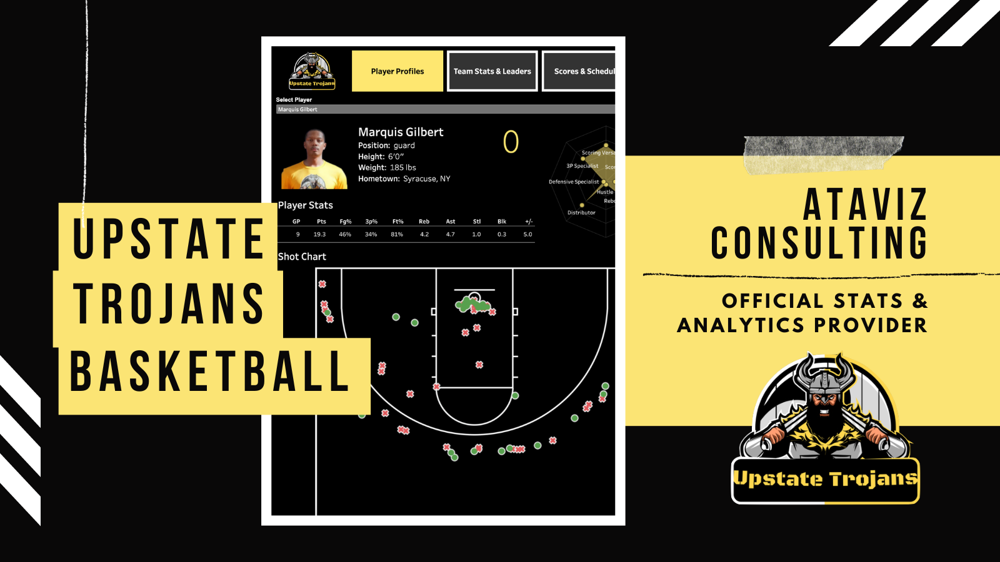

Upstate Trojans Basketball Analytics & Dashboard
Ataviz Consulting has developed a mobile-friendly basketball analytics dashboard for the Upstate Trojans, featuring player profiles with pictures, stats, and radar charts showcasing custom calculated strengths and weaknesses, team statistics including shot charts, leaders, and positional analysis, as well as a section for scores, and schedule displaying game score progression and upcoming schedules.
Syracuse Public Art Analysis & Dashboard
Ataviz Consulting's award-winning Tableau dashboard on Syracuse Public Art integrates a horizontal stacked bar chart, a neighborhood map pinpointing exhibit locations, a year-wise area chart tracking exhibit growth, and a dynamic word cloud showcasing diverse media employed in the public art projects. This dashboard won the City of Syracuse's inaugural Syracuse Data Challenge.
The ICON Sting: A Career Retrospective
Explore the iconic career of wrestling legend Sting with Ataviz Consulting's comprehensive dashboard. Analyze his matches across various promotions and locations worldwide, delve into events where the matches were held, track championship matches, discover his most frequent opponent, and examine the average duration of his matches.
US Presidential Analysis by Age
Ataviz Consulting's dashboard, US Presidential Analysis by Age, offers an unbiased, in-depth examination of the effectiveness of US Presidents based on their age at Inauguration, with effectiveness measured by each president's 2021 C-SPAN Survey Score, providing valuable insights into historical leadership trends.